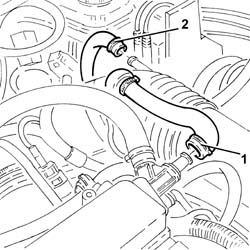
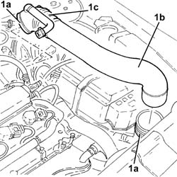
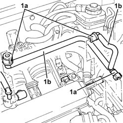

1056F74 Low pressure PIPE to FUEL PRESSURE PUMP - R.R.
- Path
- Procedures > 10 ENGINE > 1056 PETROL INJECTION SYSTEM > 1056F DIRECT PETROL INJECTION SYSTEM > 1056F74 Low pressure PIPE to FUEL PRESSURE PUMP - R.R.
- Kind
- repair procedure (removal / refitting; the operation number is the code)
- Applies to
- engines: 2.0 JTS, 2.0 JTS; all production periods
- Interactive page
- https://sloeber94.github.io/elrnDB-a156/en/#/3237741
Applies to: engines: 2.0 JTS, 2.0 JTS; all production periods
 Removing
Removing
 Refitting
RefittingPosition the vehicle on the ramp.
Proceed with removal 1016A40 ignition coil cover on cylinder head- r+r .
1. Loosen the band and disconnect the oil vapour recirculation pipe from the cam cover.
2. Loosen the band and disconnect the vacuum pipe from the corrugated sleeve.

Applies to: engines: 2.0 JTS, 2.0 JTS; all production periods
1. Loosen bands (1a) and remove the rigid pipe (1b) with corrugated air intake sleeve (1c) from the air filter to the throttle body.

Applies to: engines: 2.0 JTS, 2.0 JTS; all production periods
Proceed with removal 7055B54 under-engine guard - r r .
1. Disconnect the rapid attachments (1a) and remove the low-pressure fuel pipes for supply/recirculation of the pressure pump (1b), after releasing them from their fixing bands.

Applies to: engines: 2.0 JTS, 2.0 JTS; all production periods
Refitting
RemovingRefit the low-pressure fuel pipes for supply/recirculation of the pressure pump, connect the rapid attachments and secure the bands.
Proceed with refitting 7055B54 under-engine guard - r r .
Place the rigid air supply pipe with corrugated air intake sleeve from the filter to the throttle body back in its housing and secure it using the bands.
Connect the vacuum pipe to the corrugated hose and tighten the band.
Connect the oil vapour recirculation pipe to the tappet cover and secure with a band.
Proceed with refitting 1016A40 ignition coil cover on cylinder head- r+r .
Remove the car from the ramps.